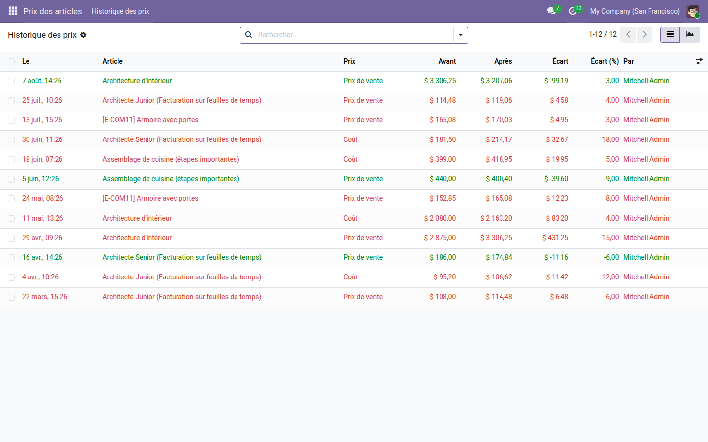
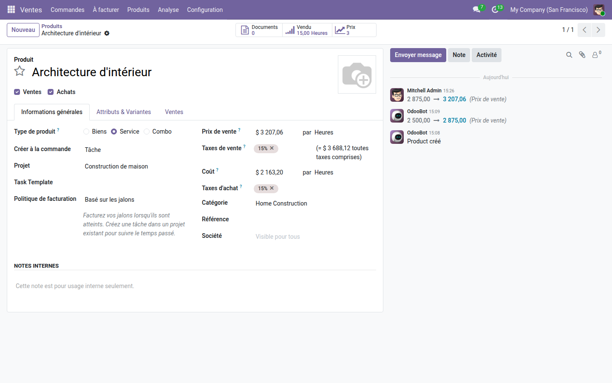

Chaque changement de prix de vente ou de coût, avec l'écart, la date et l'auteur.
Odoo n'a pas d'historique de prix. Le prix affiché est celui d'aujourd'hui ; celui d'avant la dernière hausse n'existe plus nulle part, et personne ne peut dire qui l'a changé ni quand. La question revient pourtant à chaque litige client, à chaque révision tarifaire et à chaque clôture.
Les hausses en rouge, les baisses en vert, l'écart chiffré à côté du pourcentage. Chaque ligne nomme son auteur : la question « qui a changé ce prix ? » cesse d'être une enquête.

Le bouton compte les mouvements de cet article et ouvre son historique seul. Le suivi Odoo du fil de discussion garde la trace du changement ; le module en fait une donnée qu'on peut trier, filtrer et totaliser.

Savoir qui a changé un prix est une chose ; décider qui a le droit de le faire en est une autre. La gamme OdooSkills couvre la protection du coût et de la marge, le cloisonnement des listes de prix et des catégories d'articles, et l'approbation des changements d'articles. Catalogue complet : apps.odooskills.com.
Licence LGPL-3 — compatible Odoo 19.0 Community et Enterprise. Support : support@odooskills.com.